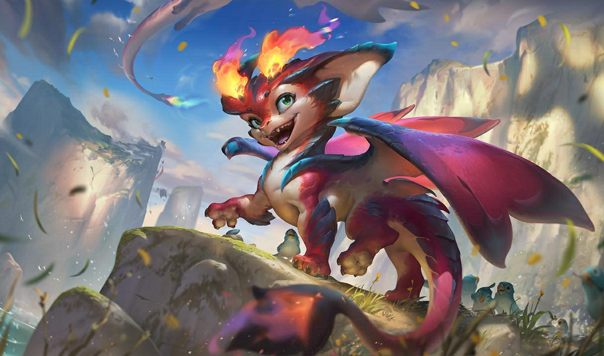

Una historia contada con datos
¿En qué minuto se perdió la partida?
Lo que 1,195 partidas de un videojuego dicen sobre cuándo se pierde: casi nunca en el último momento.
Héctor Manuel Morán Maldonado · Especialidad en Ciencia de Datos
Visualización de datos y narración de historias
DERROTA
34 minutos y 8 segundos de partida. Esto es todo lo que el juego te dice al final.
¿Se perdió en el último minuto…
o mucho antes?
1 · El misterio · el juego en 60 segundos
League of Legends, para quien nunca lo ha jugado
1Dos equipos de 5 personas (los puntos de colores), cada uno en una esquina del mapa.
2Gana quien destruye la base del otro (el juego la llama Nexo).
3Para llegar, hay que tumbar torres que defienden tres caminos.
4En medio hay monstruos (los más valiosos: los dragones y el Barón); vencerlos da una ventaja grande. Torres y monstruos son los objetivos.
Una partida dura unos 30 minutos. Nadie gana por puntos: gana quien tumba la base.
1 · El misterio · el marcador oculto
El oro: el marcador que no se ve
Todo lo bueno que haces da oro: derrotar a un rival, tumbar una torre, vencer un monstruo.
Con el oro compras equipo y te vuelves más fuerte. El que tiene más oro suele ir ganando.
Es como la posesión del balón en el fútbol: no es el marcador oficial, pero dice quién domina el partido.
Las barras son reales: el oro de los dos equipos en el minuto 16 de la partida que veremos
1 · El misterio · quién cuenta esta historia
Las partidas son mías Juego casi siempre de tirador: el personaje que ataca desde lejos y necesita oro para volverse decisivo. Mis dos personajes más usados:

Smolder108 partidas

Caitlyn106 partidas
1,195
partidas clasificatorias (las que cuentan para subir de nivel)
6
cuentas mías, en el mismo servidor
2 años
de partidas, de octubre de 2024 a octubre de 2026
Arte oficial de Riot Games (Data Dragon)
1 · El misterio · el caso
Una derrota mía: íbamos ganando 31 de los 34 minutos… y perdimos La línea es nuestra ventaja en oro (como parte de todo el oro del mapa; lo explico más adelante). Arriba de la línea punteada vamos ganando; abajo, el rival.
◆ monstruos y ■ torres que tomamos
◆ ■ los del rival
De +5.9 % en el minuto 16 a
+2.1 % en el 32; luego, el remate: 6 objetivos del rival en 2 minutos.
Partida real, elegida por regla: la más típica de las «ventajas tiradas», 1 de cada 10 derrotas (las veremos más adelante)
2 · Las pistas · lo que quise averiguar
¿Las partidas se pierden en un momento, o se van perdiendo?
1¿Aprovechamos la ventaja? Cuando vamos ganando en oro, ¿tomamos menos objetivos en las partidas que al final perdemos?
2¿Un monstruo del rival decide la partida? El momento en que la partida se voltea en nuestra contra —lo llamaré el quiebre—, ¿coincide con un monstruo que tomó el rival?
3¿Hay un punto sin regreso? ¿Existe un minuto a partir del cual ya casi nadie remonta?
Las tres hipótesis del proyecto, escritas antes de ver los datos
Compararé siempre contra mis victorias
3 · Las pruebas · los datos
1,195 partidas, cada una como una película de fotos El servidor del juego guarda, de cada partida, una «foto» del oro de cada jugador por minuto, y la hora exacta de cada torre y cada monstruo. Así se ve la partida del caso, foto por foto:
Cada foto: altura = tamaño
de la ventaja · azul, vamos ganando · rojo, va ganando el rival
Descargué 1,241 y quité 46 que no se jugaron de verdad: alguien se desconectó o terminaron en los primeros minutos.
Quedan 537 derrotas y 658 victorias. Las victorias son el grupo de comparación.
Fuente: la API oficial de Riot Games · los nombres de los otros jugadores se borraron antes de analizar
3 · Las pruebas · cómo medir quién va ganando
2,000 de oro no pesan igual en el minuto 5 que en el 30
Al inicio hay poco oro en el mapa: 2,000 de ventaja son el 13 % de todo.
En el minuto 30 hay mucho más: la misma ventaja es apenas el 2 %.
Por eso mido la ventaja como porcentaje del oro del mapa, no en oro suelto.
Oro total del mapa: la mediana de mis partidas en cada minuto
3 · Las pruebas · un tropiezo honesto
Mi primera forma de encontrar «el minuto del quiebre» falló Primero definí el quiebre como el minuto en que más cae la ventaja. Cada barra: qué parte de las partidas tuvo su mayor caída en ese minuto.
Caía casi siempre en los primeros minutos, igual al ganar que al perder: al inicio una sola jugada mueve mucho la balanza. No medía el quiebre: medía jugadas sueltas del inicio.
Cambié a la regla que tenía de respaldo: el quiebre es la última vez que mi equipo pasa a ir perdiendo.
El cambio se decidió después de ver este resultado, y así se reporta
4 · Lo que encontré · pista 1
Con ventaja, al perder tomamos menos objetivos… pero solo después del minuto 15 Objetivos tomados por cada 10 minutos en que íbamos ganando con claridad (5 % o más de todo el oro del mapa):
No es que no consigamos ventaja: es que después del minuto 15 no la usamos para tomar objetivos.
Es una asociación, no una causa: tomar objetivos también da oro
4 · Lo que encontré · pista 2
¿Un monstruo del rival decide el quiebre? No se puede afirmar ¿Qué tan seguido el quiebre cae a un minuto o menos de un monstruo del rival? «Pura casualidad» = los mismos monstruos puestos en minutos al azar. (Al ganar, el quiebre es la última vez que fuimos abajo.)
Cuando pierdo, apenas supera al azar, y midiéndolo de otra forma ni eso.
Cuando gano, lo supera por más (+9 contra +4 puntos): describe el ritmo de cualquier partida, no por qué pierdo.
La «pura casualidad»: mover los monstruos del rival a otros minutos al azar, 10,000 veces, y medir lo mismo
4 · Lo que encontré · pista 3
La puerta se va cerrando poco a poco… y hacia el minuto 27 ya casi no se abre De cada 20 partidas que van claramente perdiendo en ese minuto (5 % o más del oro del mapa abajo), cuántas terminan ganando:
En el minuto 5
37 % remonta: unas 7 de cada 20
En el minuto 15
20 % remonta: unas 4 de cada 20
En el minuto 30
4 % remonta: 1 de cada 20, o menos
La curva baja sin un salto. «Casi nadie» = menos de 1 de cada 20, umbral fijado después de ver los datos (con 2 de cada 20 sería el minuto 22)
4 · Lo que encontré · las formas de perder
Cuatro formas de perder… y una mitad pareja hasta el final
Desde el inicio
19 % abajo desde los primeros minutos
Aplastados
15 % muy abajo, sin reacción
Ventaja tirada
10 % íbamos ganando y la perdimos
Por un objetivo
4 % parejas hasta un monstruo del rival
Parejas hasta el final
52 % no encajan en ninguna
En la partida típica de esa mitad, nadie lleva una ventaja clara
el 78 % del tiempo… y mi equipo se va quedando atrás poco a poco.
Cada línea es la partida típica de su grupo · reglas escritas antes de ver los datos, sin ajustarlas después
5 · La respuesta · cómo terminaron las tres pistas
Lo que pensaba al inicio, y lo que encontré
Pista 1 · la ventaja
«Al perder aprovechamos menos la ventaja».
Sí, pero solo después del minuto 15.
Se confirma y se precisaPista 2 · el objetivo
«Un monstruo del rival decide la partida».
No se puede afirmar: depende de cómo se mida, y pasa más cuando gano.
No concluyentePista 3 · sin regreso
«Hay un minuto a partir del cual ya casi nadie remonta».
Sí: desde el minuto 27 casi nadie remonta, pero se llega ahí poco a poco.
Se confirmaLas tres hipótesis escritas antes de ver los datos, y su resultado
5 · La respuesta
Mis partidas casi nunca se pierden en el último momento. Se van perdiendo.
En la partida del inicio pasamos a ir abajo en el minuto 34… pero la ventaja
se venía encogiendo desde el 16: perdimos el 64 % de la ventaja antes del remate.
Lo que no puedo afirmar: causas (solo veo asociaciones), cuánto pesé yo (el resultado es del equipo), ni que valga para otros jugadores.
Gracias
La próxima vez que veas «DERROTA», pregúntate cuándo empezó, no cuándo terminó.
El reporte completo trae el método, las pruebas estadísticas y todo el código.
Proyecto no avalado por Riot Games. League of Legends y Riot Games son marcas
registradas de Riot Games, Inc.
Elaborada con la asistencia de Claude (Anthropic)